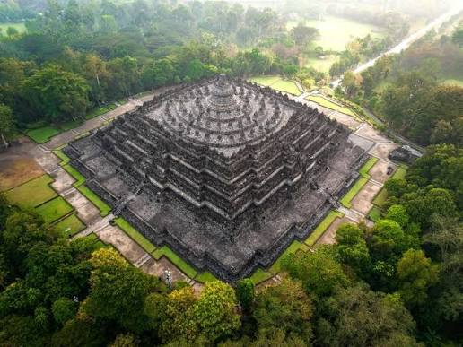

Candi Borobudur adalah salah satu candi Buddha terbesar dan paling terkenal di dunia yang terletak di Kabupaten Magelang, Jawa Tengah, Indonesia. Candi ini merupakan peninggalan sejarah yang
memiliki nilai budaya, seni, dan keagamaan yang sangat tinggi. Borobudur dibangun sekitar abad ke-8 hingga ke-9 Masehi pada masa Dinasti Syailendra.
Candi Borobudur memiliki bentuk bangunan bertingkat yang tersusun dari batu-batu andesit. Bangunannya terdiri atas sembilan teras, yaitu enam teras berbentuk persegi dan tiga teras berbentuk
lingkaran, dengan sebuah stupa utama di bagian puncaknya. Di dalam dan di sekitar stupa-stupa tersebut terdapat patung Buddha yang menjadi ciri khas candi ini.
Salah satu keunikan Candi Borobudur adalah relief-relief yang menghiasi dindingnya. Relief tersebut menggambarkan berbagai kisah kehidupan manusia, ajaran Buddha, serta perjalanan menuju
pencerahan. Bentuk bangunan Borobudur juga melambangkan tahapan kehidupan manusia dalam ajaran Buddha, dari dunia yang dipenuhi keinginan hingga mencapai kesempurnaan spiritual.
Copyright © 2026 by Naraya